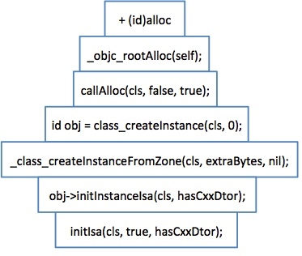
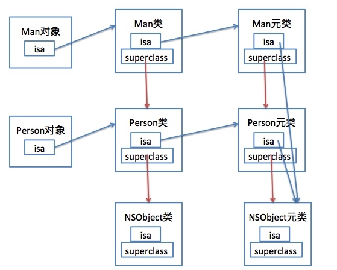
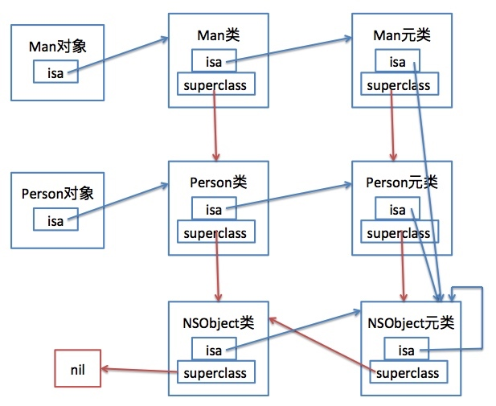

isa指针
isa
我们知道，在NSObject中有一个isa成员变量：
@interface NSObject <NSObject> {
Class isa OBJC_ISA_AVAILABILITY;
}
但这个isa具体又是什么东西？我们一步步来分析：
Class
在objc-private.h中，我们能看到Class的定义：
typedef struct objc_class *Class;
也就是说isa其实就是一个objc_class的结构体指针，而objc_class代表着OC中的一个类：
struct objc_class : objc_object {
Class superclass;
cache_t cache;
class_data_bits_t bits;
// ....
}
Object
从上面可以看出，objc_class继承了objc_object，而objc_object在OC中代表着一个对象：
struct objc_object {
private:
isa_t isa;
// ...
}
objc_object中有一个私有成员：isa，它是isa_t类型，继续跟下去会发现isa_t是一个union(联合体)
union isa_t
{
isa_t() { }
isa_t(uintptr_t value) : bits(value) { }
Class cls;
uintptr_t bits;
# elif __x86_64__
# define ISA_MASK 0x00007ffffffffff8ULL
# define ISA_MAGIC_MASK 0x001f800000000001ULL
# define ISA_MAGIC_VALUE 0x001d800000000001ULL
struct {
uintptr_t indexed : 1;
uintptr_t has_assoc : 1;
uintptr_t has_cxx_dtor : 1;
uintptr_t shiftcls : 44; // MACH_VM_MAX_ADDRESS 0x7fffffe00000
uintptr_t magic : 6;
uintptr_t weakly_referenced : 1;
uintptr_t deallocating : 1;
uintptr_t has_sidetable_rc : 1;
uintptr_t extra_rc : 8;
# define RC_ONE (1ULL<<56)
# define RC_HALF (1ULL<<7)
};
}
上面可以看出在x86_64下，isa占64个字节。这里我们主要把关注点放在indexed：
inline void
objc_object::initIsa(Class cls, bool indexed, bool hasCxxDtor)
{
assert(!isTaggedPointer());
if (!indexed) {
isa.cls = cls;
} else {
assert(!DisableIndexedIsa);
isa.bits = ISA_MAGIC_VALUE;
// isa.magic is part of ISA_MAGIC_VALUE
// isa.indexed is part of ISA_MAGIC_VALUE
isa.has_cxx_dtor = hasCxxDtor;
isa.shiftcls = (uintptr_t)cls >> 3;
}
}
从上面可以看出：
indexed为0：表示访问对象的isa指针会直接返回指向cls的指针；
indexed为1：表示当前isa包含了更多信息，但是里面也包含了cls信息，只是其中关于类的信息放在了shiftcls中。
回头再看看NSObject中的isa成员变量：
@interface NSObject <NSObject> {
struct objc_class *isa;
}
// 继续替换
@interface NSObject <NSObject> {
struct objc_class : objc_object {
Class superclass;
cache_t cache;
class_data_bits_t bits;
....
} *isa;
}
// 最后结构
@interface NSObject <NSObject> {
struct objc_class : objc_object {
isa_t isa;
Class superclass;
cache_t cache;
class_data_bits_t bits;
....
} *isa;
}
对象中的isa如何与类关联
从上面我们知道，每个对象中都有一个isa，那么这个isa是怎么和对应的类关联起来的呢？
我们从alloc中进行分析：

alloc最终会调用initIsa，在这个函数中对对象的isa进行赋值，把它指向所属的类：
isa.shiftcls = (uintptr_t)cls >> 3;
类中isa如何与元类关联
对于类中isa怎么关联上meta class的，我没有找到相应的代码，只能通过clang编译。
定义了一个Person类，继承NSObject：
static void OBJC_CLASS_SETUP_$_Person(void ) {
OBJC_METACLASS_$_Person.isa = &OBJC_METACLASS_$_NSObject;
OBJC_METACLASS_$_Person.superclass = &OBJC_METACLASS_$_NSObject;
OBJC_METACLASS_$_Person.cache = &_objc_empty_cache;
OBJC_CLASS_$_Person.isa = &OBJC_METACLASS_$_Person;
OBJC_CLASS_$_Person.superclass = &OBJC_CLASS_$_NSObject;
OBJC_CLASS_$_Person.cache = &_objc_empty_cache;
}
可以得出：
- Person类的isa指向了Person的元类；
- Person的superclass指向了NSObject；
- cache这个是方法的缓存列表，因为没有调用方法，所以这个缓存列表为空；
- Person元类的isa指向了NSObject的元类；
- Person元类的父类指向了NSObject的元类。
现在又定义了一个类Man，继承Person：
static void OBJC_CLASS_SETUP_$_Man(void ) {
OBJC_METACLASS_$_Man.isa = &OBJC_METACLASS_$_NSObject;
OBJC_METACLASS_$_Man.superclass = &OBJC_METACLASS_$_Person;
OBJC_METACLASS_$_Man.cache = &_objc_empty_cache;
OBJC_CLASS_$_Man.isa = &OBJC_METACLASS_$_Man;
OBJC_CLASS_$_Man.superclass = &OBJC_CLASS_$_Person;
OBJC_CLASS_$_Man.cache = &_objc_empty_cache;
}
可以得出：
- Man类的isa指向了Man的元类；
- Man的父类指向了Person类；
- Man元类的isa指向了NSObject的元类；
- Man元类的父类指向了Person的元类。
那么我们得出的结论为：

但是NSObject中的isa、superclass指向谁？NSObject元类的isa和superclass又指向了谁？
按照网上的说法：
- NSObject Class的superclass指向nil；
- NSObject Class的isa指向NSObject metaClass；
- NSObject metaClass的superclass指向NSObject Class；
- NSObject metaClass的isa指向NSObject metaClass本身。
那么我们一步一步验证：
int main(int argc, const char * argv[]) {
NSLog(@"===============================================================");
NSLog(@"NSObject address = %p", [NSObject class]);
NSLog(@"NSObject superclass = %p", [NSObject superclass]);
NSLog(@"NSObject metaClass = %p", objc_getMetaClass("NSObject"));
NSLog(@"NSObject metaClass superclass = %p", [objc_getMetaClass("NSObject") superclass]);
NSLog(@"===============================================================");
NSLog(@"Person address = %p", objc_getClass("Person"));
NSLog(@"Person superclass = %p", [Person superclass]);
NSLog(@"Person metaClass = %p", objc_getMetaClass("Person"));
NSLog(@"Person metaClass superclass = %p", [objc_getMetaClass("Person") superclass]);
NSLog(@"================================================================");
NSLog(@"Man address = %p", objc_getClass("Man"));
NSLog(@"Man superclass = %p", [Man superclass]);
NSLog(@"Man metaClass = %p", objc_getMetaClass("Man"));
NSLog(@"Man metaClass superclass = %p", [objc_getMetaClass("Man") superclass]);
NSLog(@"===============================================================");
return 0;
}
然后我在objc_getMetaClass函数中添加了两行打印信息：
Class objc_getMetaClass(const char *aClassName)
{
Class cls;
if (!aClassName) return Nil;
cls = objc_getClass (aClassName);
if (!cls)
{
_objc_inform ("class `%s' not linked into application", aClassName);
return Nil;
}
// 这两行代码自己添加
_objc_inform("%s isa = %p", aClassName, cls->getIsa());
_objc_inform("%s metaClass isa = %p", aClassName, cls->ISA()->getIsa());
return cls->ISA();
}
objc_getMetaClass函数是获取名为aClassName类的元类，看内部实现非常的清楚，就是获取名为aClassName类中isa指向的东西。
而添加的两行打印代码中，第一行是打印名为aClassName类的isa指针内容；第二行打印的是名为aClassName元类的isa指针内容。
log简化版：
Man address = 0x1000024c0
Man superclass = 0x1000024e8 -> Person address
Man isa = 0x100002498 -> Man metaClass
Man metaClass = 0x100002498
Man metaClass superclass = 0x100002510 -> Person metaClass
Man metaClass isa = 0x1003b0120 -> NSObject metaClass
Person address = 0x1000024e8
Person superclass = 0x1003b00f8 -> NSObject address
Person isa = 0x100002510 -> Person metaClass
Person metaClass = 0x100002510
Person metaClass superclass = 0x1003b0120 -> NSObject metaClass
Person metaClass isa = 0x1003b0120 -> NSObject metaClass
NSObject address = 0x1003b00f8
NSObject superclass = 0x0 -> nil
NSObject isa = 0x1003b0120 -> NSObject metaClass
NSObject metaClass = 0x1003b0120
NSObject metaClass superclass = 0x1003b00f8 -> NSObject address
NSObject metaClass isa = 0x1003b0120 -> NSObject metaClass
最后得出的最终最终结论为：
